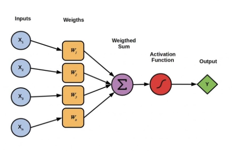
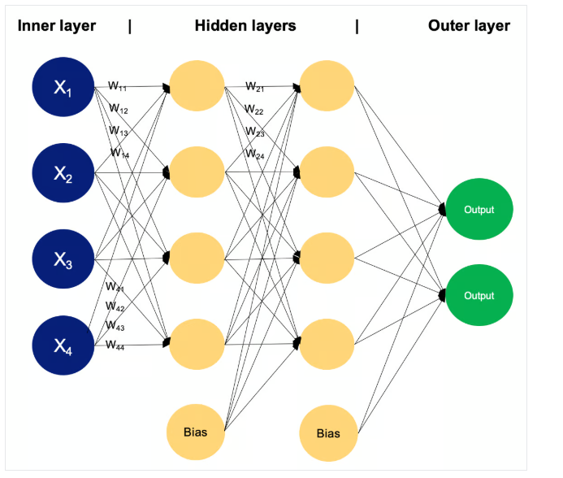

4 Deep Learning Para Aplicações de Inteligência Artificial com Python e C++
4.1 Intro
4.1.1 História :
- 1943 : Conceito de um modelo de rede neural
- 1958 : Perceptron (primeira arquitetura de rede neural)
- 1969 : Pesquisadores publicam que o perceptron não funciona
: **Inverno da IA**- 1986 : Backpropagation
- 1989 : RNN - revulução na PLN
- 1997 : LSTM, variante da RNN
- 2012 : AlexNet vence ImageNet
- 2017 : Arquitetura Transformer, paper Attention is All You Need
- 2020 : LLM (GPT-3)
- 2022 : OpenAI publica ChatGPT
- Hoje : LLM - IA Generativa
4.1.2 Arquiteturas :
- DNN : (Redes neurais desamente conectadas)
- CNN : (Redes neurais convolucionais)
- RNN : (Redes Neurais Recorrentes)
- Autoencoders
- GANs : (Redes Adversariais Generativas)
- Redes Siamesas
- Modelos de Capsule
- Modelos de Atenção e Transformes
4.1.3 Conceitos
Activation function : Introduzem a não linearidade o que permite que a rede modelo funções complexas e regularização, alguns tipos de funções de ativação Sigmoid, Tanh, ReLU ( Leaky ReLU, Parametric ReLU, GenLU)
Overfitting : Quando o modelo aprende demais sobre os dados e não consegue generalizar
Underfitting : Quando o modelo é muito simples. não se ajusta aos dados de treino, ou seja , o modelo não aprendeuos padrões dos dados
Regularizaçáo: L1 (penaliza soma absoluta) e L2 (penaliza a soma dos quadrados) são tecnicas de regressão linear e logística
Dropout : certos neurônios são desligados aleatoriamente em cada interação
Early Stopping : interrompe o treinamento assim que o desempenho começam a degradar.
Loss function : quantifica o quão bem as previsões de um modelo se alinham com os valores reais observados. A escolha da função depende do tipo de problema a ser resolvido:
- Regressão : MSE, MAE
- Classificação: Emtropia cruzada ou log loss, Hinge Loss
- Modelos Generativos GANs: Gradiente descendente
Tools and Frameworks
Frameworks Python : PyTorch, TensorFlow, MxNet, JAX, ONNX
Bibliotecas C++ : Armadillo, MLPack
Backpropagation
O modelo irá fazer a primeira passada de calculo Forward Pass e calcular o erro.
Depois disso o algoritmo de Backpropagation irá através de cálculos de derivadas reduzir o erro do modelo (Loss), isso é feito alterando os pesos novamente com objetivo de reduzir o erro final.
Novo peso = Peso anterior - Derivada * Learing Rate
4.1.4 Mais detalhes sobre Algumas redes e arquiteturas
CNN : Utilizada para detecção de objetos e lidar com imagens
RNN : Utilizadas para linguagem natural ou series temporais, capaz de manter um estado de memória. Temos algumas variações LSTM (Long Short-term memory) e GRU (Gated Recurrent Units)
Redes Neurais Generativas : Redes que permitem a geração de novos dados semelhantes aos dados que foram treinados, uma arquitetura de Redes generativas é a GANs (Redes Adversariais Generativas) que são duas redes treinadas simultaneamente (O gerador e o discriminador)
Gerador : Produz dados novos a partir de ruído aleatório
Discriminador : Tenta distinguir entre amostras geradas (fake) e dados reais
O treinamento contiua até que o gerador se torne suficientemente bom para produzir dados que o discriminador não consiga diferenciar entre reais ou fake.
Outro tipo de rede neural generativa é o Modelo Autorregressivo como PixelRNN, utilizado para gerar imagens ou música,
Temos também Redes Geradoras de Momento Variacional (Variacional Autoencoders VAEs) : A ideia é aprender a distribuição latente dos dados de entrada e em sequida gerar novos dados
Mecanismos de Atenção e Transformadores: focam e partes específicas da entrada
4.1.5 Transfer Learning e Modelos Pré-treinados
Transfer Learning é uma técnica onde um modelo desenvolvida para uma tarefa é reutilizado como ponto de partida para outra tarefa relacionada, pode ser utilizado como estratégia de inicialização de pesos
Modelos pré-treinados são modelos ja treinados em grandes bases de dados:
Visão Computacional : VGGNet, ResNet, Inspectino
PLN : BERT, GPT, Llama, T5
4.1.6 Ótimização e Regularização
Otimização : processo de ajustar os parâmetros (pesos) do modelo com o objetivo de minimizar a função de perda e com isso encontrar o conjunto ótimo de parametros que resulte na melhor performance do modelo, algoritmos utilizados :
- Gradiente descendente
- Gradiente descendente Estocastico (SGD)
- Momentum
- Adam
- Batch Normalization
Regularização conjunto de técnicas que visam impedir o overfitting, algumas técnicas :
- L1 e L2
- Dropout (Desativa neuronios durante o treinamento)
- Early Stopping (Interronpe o treinamento assim que a performance piora)
4.1.7 Hugging Face
Grante primeira tentativa de criar LLM (Large Language Model)
4.1.8 Explorando o ChatGPT
Explore o [ChatGPT]}(https://chatgpt.com/)
- Modeli simples
- Modelo complexo
4.1.9 Configuração do Amiente de Desenvolvimento
- Anaconda
- Google Colab
- Visual Studio Code
4.2 Fundamentos
- Perceptron : algoritmo de aprendizagem supervisionada para classificação binária, resolve problemas linearmente separáveis

Os pesos é justamente o que o modelo aprende durante o treinamento.
MLP (Multi layer perceptron)
Criação do algoritmo de backpropagation que permite que as redes de múltiplas camadas ajustassem os pesos de forma eficaz e possibilitou a resolução de problemas não lineares.
MLPs são compostas por uma camada de entrada, uma ou mais camadas ocultas e uma camada de saída

4.2.1 How backpropagation algorithm works:
Forward Pass: During the forward pass, input data is fed into the neural network, and the network’s output is computed layer by layer. Each neuron computes a weighted sum of its inputs, applies an activation function to the result, and passes the output to the neurons in the next layer.
Loss Computation: After the forward pass, the network’s output is compared to the true target values, and a loss function is computed to measure the discrepancy between the predicted output and the actual output.
Backward Pass (Gradient Calculation): In the backward pass, the gradients of the loss function with respect to the network’s parameters (weights and biases) are computed using the chain rule of calculus. The gradients represent the rate of change of the loss function with respect to each parameter and provide information about how to adjust the parameters to decrease the loss.
Parameter update: Once the gradients have been computed, the network’s parameters are updated in the opposite direction of the gradients in order to minimize the loss function. This update is typically performed using an optimization algorithm such as stochastic gradient descent (SGD), that we discussed earlier.
Iterative Process: Steps 1-4 are repeated iteratively for a fixed number of epochs or until convergence criteria are met. During each iteration, the network’s parameters are adjusted based on the gradients computed in the backward pass, gradually reducing the loss and improving the model’s performance.
4.3 Projecto 1
Exemplo simples para visualizar os modulos e a camada de atenção:
Na arquitetura transformes o mecanismo de atenção do tipo (Scaled dot-product) utiliza três componentes :
Q_(Query)_ : representa parte que estamos interessados, por exemplo : Em PLN poderia ser a frase que estamos tentando traduzir. Em um modelo transformer para cada posição uma query é gerada e são usadas para pontar a qualidade da entrada.
K_(Key)_ : Usada para pontar a entrada e comparada com a query para determinar o grau de atenção, essa comparação resulta em um conjunto de pontuação que indica a relevancia de cada parta da entrada para representar a query
K e Q determina onde o modelo deve focar
- V_(Value)_ : contém a info real que queremos extrair, compoe a saida do mecanismo de atenção, cada value é associado a uma key.
O mecanismo de atenção calcula um conjunto de pontuações e aplica softmax para obter pesos de atenção e usa esses pesos para ponderar os values, criando uma saída .
4.4 Referencia :
[A Comprehensive Guide to the Backpropagation Algorithm in Neural Networks](https://neptune.ai/blog/backpropagation-algorithm-in-neural-networks-guide]
*[A Deep Dive Into the Transformer Architecture –The Development of Transformer Models](https://www.exxactcorp.com/blog/Deep-Learning/a-deep-dive-into-the-transformer-architecture-the-development-of-transformer-models